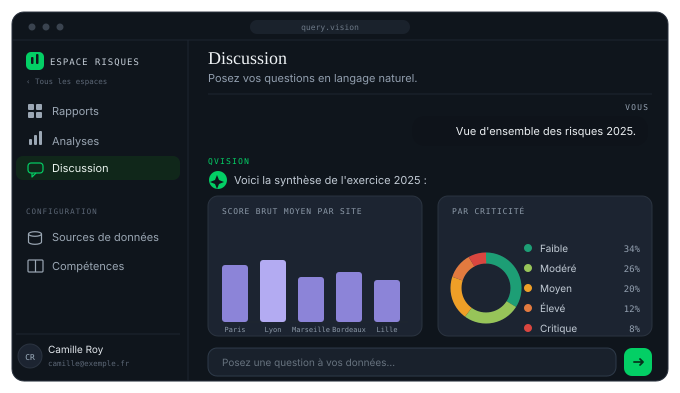
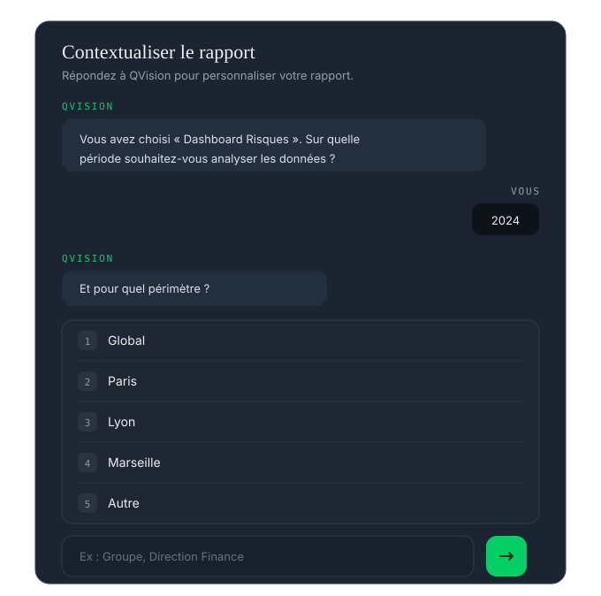
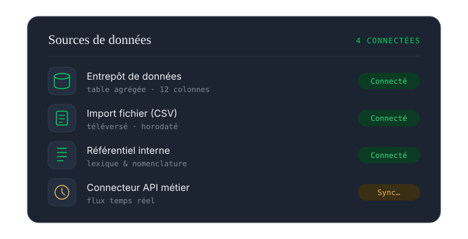

Agent 01 — QueryVision — L'analyste
Query Vision transforme les données complexes en décisions simples. Interrogez vos chiffres en langage naturel et obtenez instantanément un rapport chiffré, sourcé et auditable. Sans tableur, sans ticket, sans attente.
Ce que l'agent sait faire
Requête en langage naturel
Posez la question comme vous la formulez à l'oral. L'agent traduit, exécute, et justifie chaque étape de calcul — la requête générée est exposée, jamais cachée.

Analyse & visualisation
Insight rédigé, visualisation adaptée, chiffre clé en évidence. Vous comprenez en lisant, pas en interprétant — et chaque rapport peut être contextualisé, versionné et exporté.

Sémantique métier
Indicateurs, dimensions, hiérarchies : Query Vision parle la langue de votre direction, pas celle des tables techniques — grâce au corpus métier chargé à l'intégration de vos données.

Comment il travaille
Vos sources, là où elles vivent. Sans copie hors de votre infrastructure.
Modélisation métier et règles de gouvernance, posées à l'intégration.
En langage naturel, par tous les métiers autorisés.
L'analyse, pas le tableur. Lisible immédiatement, sourcée.
Diffuser, exporter, automatiser la décision — API et MCP.
Droits par rôle, workspace et produit — journal d'audit de chaque requête — exécution intégralement dans votre infrastructure dédiée, hébergée en France.
Prochaine étape
Une démonstration sur un échantillon de vos données, avec votre vocabulaire métier. Sans engagement.